Directory
Civil & Environmental Engineering
Department Chair
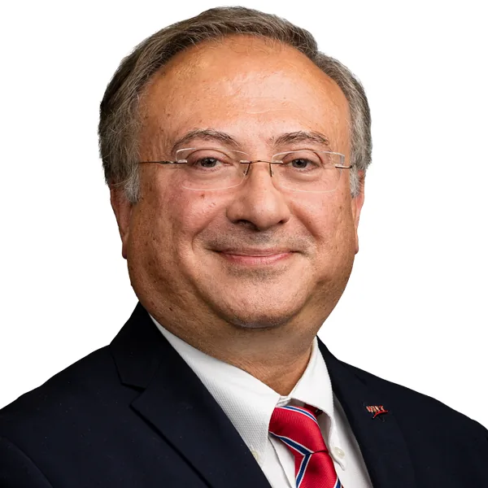
Taha MarhabaDistinguished ProfessorDistinguished Professor
 Michel BoufadelDistinguished ProfessorEnvironmentalenergyOil SpillsCoastal Systems.
Michel BoufadelDistinguished ProfessorEnvironmentalenergyOil SpillsCoastal Systems.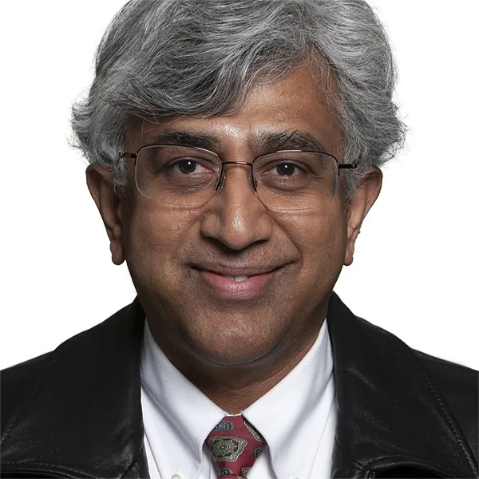
Jay MeegodaDistinguished ProfessorMechanics of Geo-environmental Engineering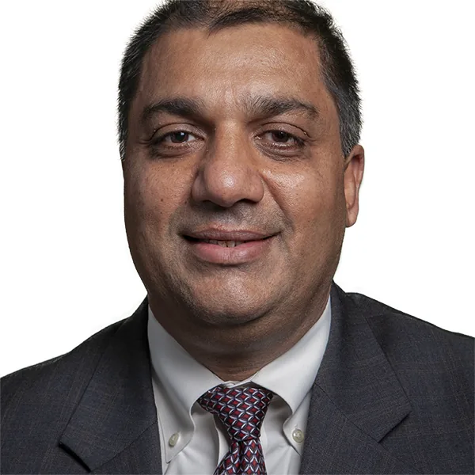
Sunil SaigalDistinguished ProfessorProfessor
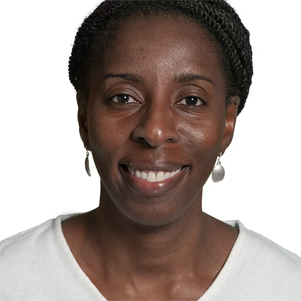
Janice DanielProfessor, Civil and Environmental Engineering and Associate Dean for Research and Graduate Studiestransportation operationssafetyFrank GolonProfessor of Practice in Construction Engineering and Management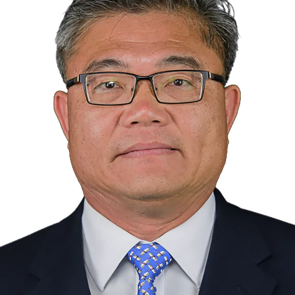
I Jy ChienProfessorMathematical and simulation modelingPublic transportation systemsTransportation systems analysisIntelligent transportation systemsWalter KononProfessor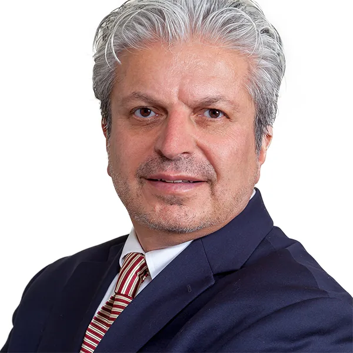
Mohamad SaadeghvaziriProfessor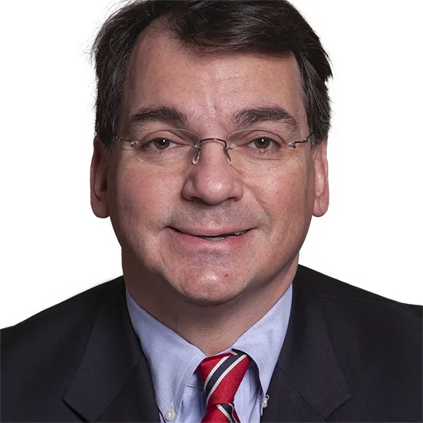
Lazar SpasovicProfessorfreight transportationbusiness logisticsTransportation systems analysis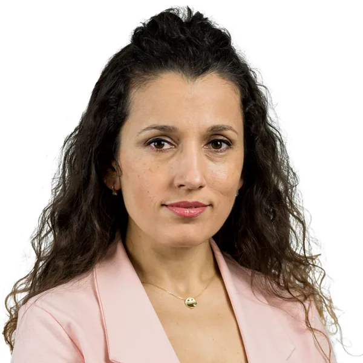
Esmeralda VatajDirector of First-Year PhysicsMethi WecharatanaProfessor Wen ZhangProfessorEnvironmental NanotechnologyRenewable energyphotocatalysisreactive membrane filtration
Wen ZhangProfessorEnvironmental NanotechnologyRenewable energyphotocatalysisreactive membrane filtrationAssociate Professor
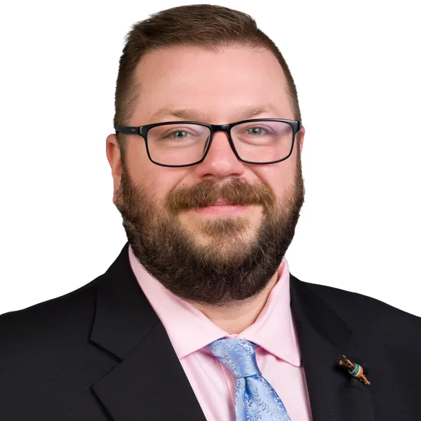
Matthew AdamsAssociate Professoradvanced cement based materialscorrosionconcrete durabilitysustainable construction materialsMatthew BandeltAssociate ProfessorInfrastructure MaterialsStructural EngineeringComputational ModelingHPFRCC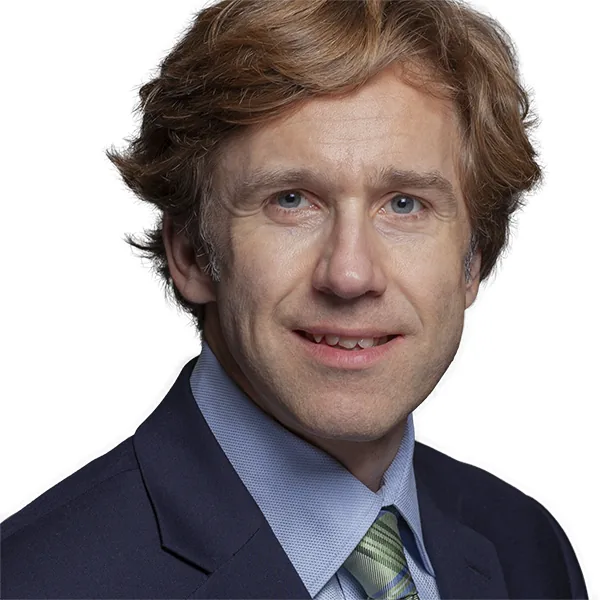
Branislav DimitrijevicAssociate ProfessorPerformance-Based Transportation Planning and ProgrammingIntegrated Travel Demand and Land Use PlanningDecision Support Systems for Traffic Operations, Incident and Congestion Management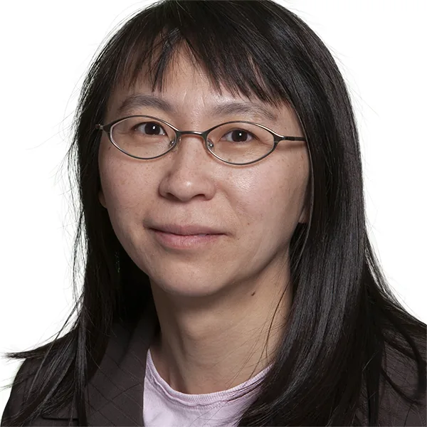
Yuan DingAssociate Professor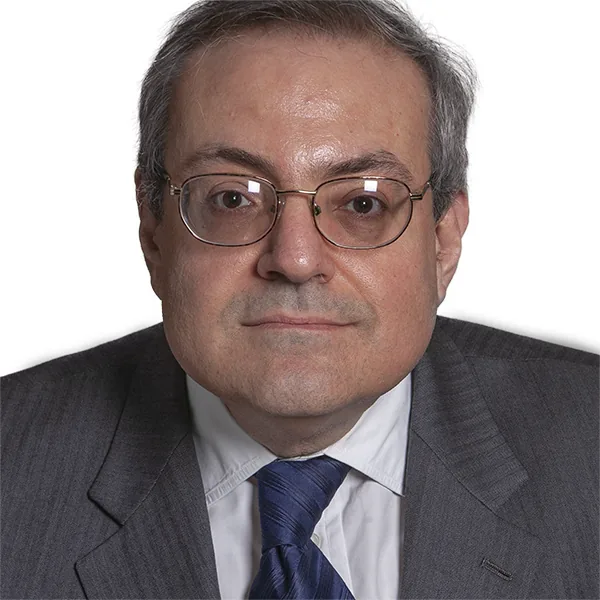
Fadi KaraaAssociate Professorwith a focus on waterwastewater and energy supply chainsInfrastructure managementconstruction management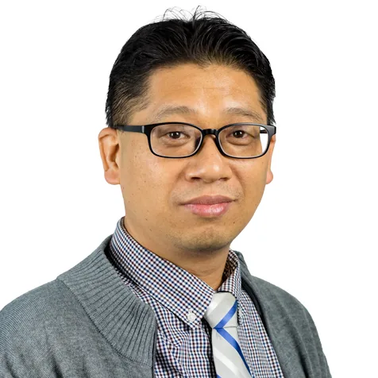
Joyoung LeeAssociate ProfessorConnected and Automated VehiclesIntersection Control and Traffic OperationsIntelligent transportation systemsVehicular Wireless Communications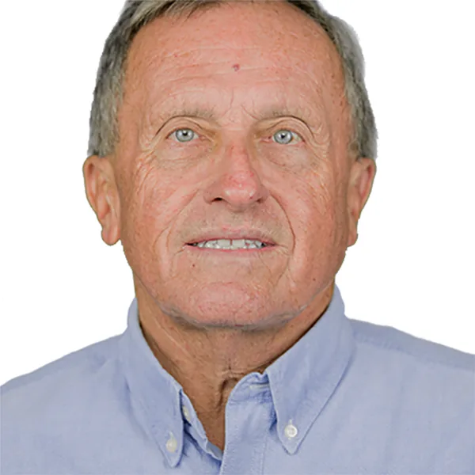
Thomas OlenikAssociate ProfessorStormwater Managementhydraulicsexpert witnessArjun VenkatesanAssociate ProfessorThe Emerging Contaminants Research Laboratory (ECRL) is interested in studying the occurrencefatetreatment of emerging contaminants in the natural and built environmentContaminants of Emerging ConcernAssistant Professor
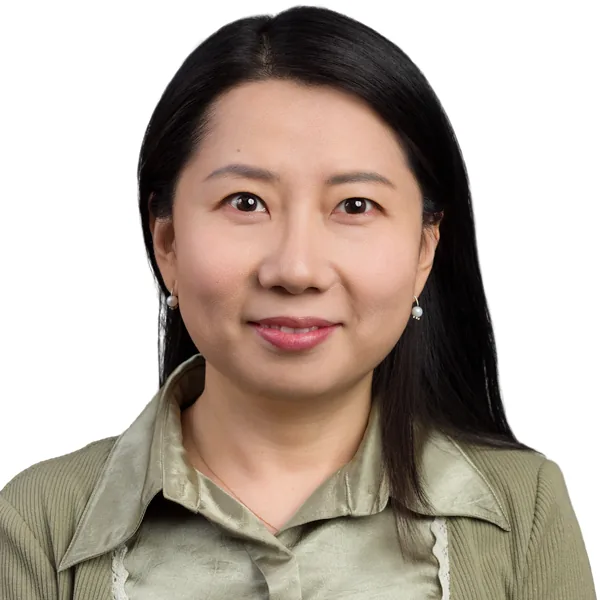
Yun BaiAssistant ProfessorTransportation Asset ManagementTransportation Systems ModelingSmart MobilityLogistics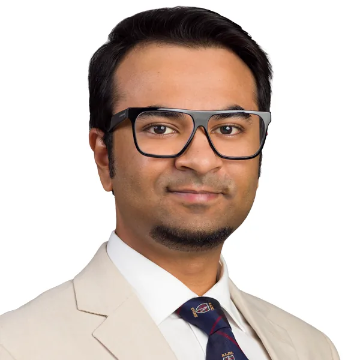
Mohammad KhalidAssistant ProfessorEnd-User DevelopmentData AnalyticsSensing TechnologiesConstruction InformaticsOladoyin KolawoleAssistant ProfessorGeomechanicsPorous MediaGeotechnical EngineeringBiogeomechanicsPatrick Borges RodriguesAssistant ProfessorHuman-Robot Interaction (HRI)Building Information Modeling (BIM) William PennockAssistant ProfessorModeling of conventional drinking water treatment processes (coagulation, flocculation, sedimentation, filtration)Technology development for low resource applicationsfluid mechanicsLead corrosion
William PennockAssistant ProfessorModeling of conventional drinking water treatment processes (coagulation, flocculation, sedimentation, filtration)Technology development for low resource applicationsfluid mechanicsLead corrosion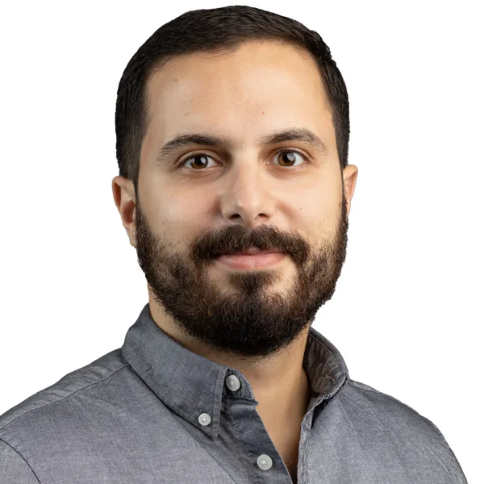
Rayan Hassane AssaadAssistant ProfessorInfrastructure and Construction ManagementAI and Data AnalyticsSensing & RoboticsautomationSenior University Lecturer
Nazhat AboobakerAdjunctAsif ArshidAdjunctJoseph BaladiAdjunct InstructorDejan BesenskiAdjunctEduardo CastroSenior University Lecturer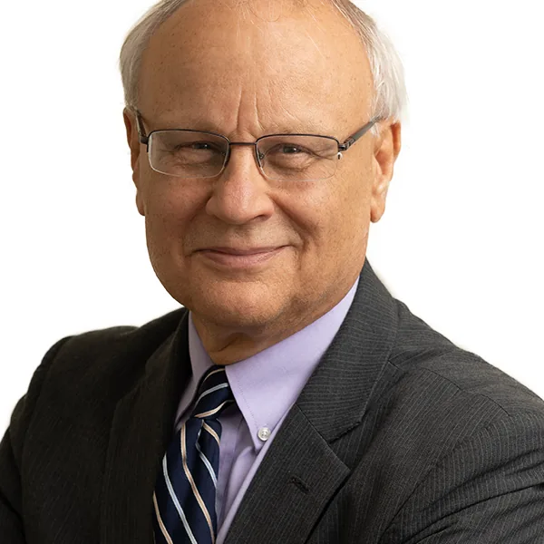
Andrew CianciaSenior University LecturerMaria ColerAdjunct InstructorMuhammad ElgammalAdjunct InstructorMichael FurreyAdjunct InstructorChristopher HannaAdjunct Instructor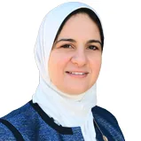
Marwa KorayemAdjunct InstructorAllison LapatkaAdjunct InstructorAnthony MassariAdjunct InstructorGeraldine MilanoSenior University LecturerRajendra NavalurkarAdjunct InstructorNicole Del MonacoAdjunct InstructorGodson OraeduAdjunct Instructor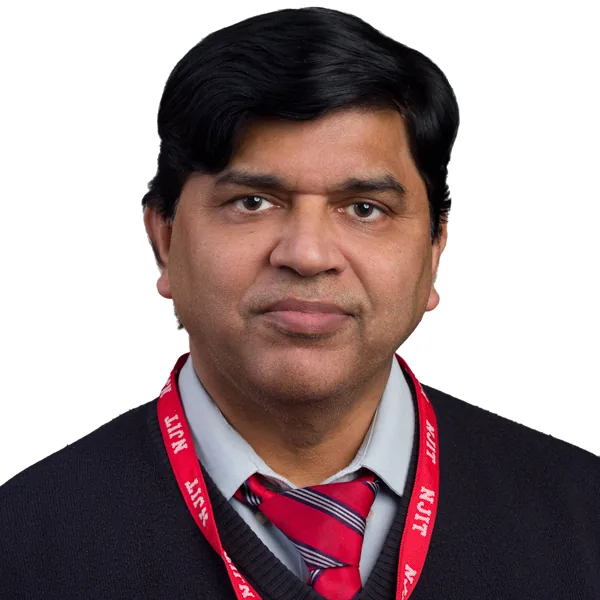
Avinash PrasadAdjunct Instructor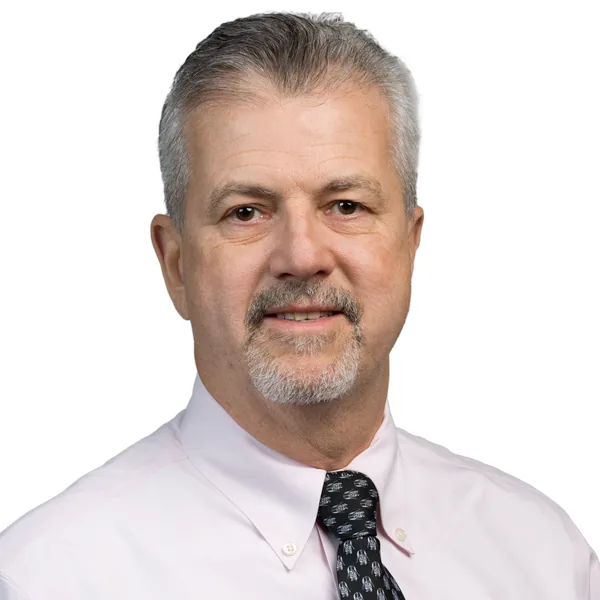
Matthew RiegelAdjunct InstructorChrissa RoessnerAdjunct Instructor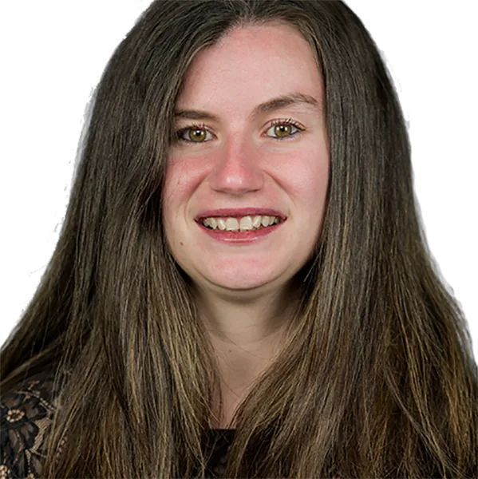
Stephanie SantosSenior University Lecturer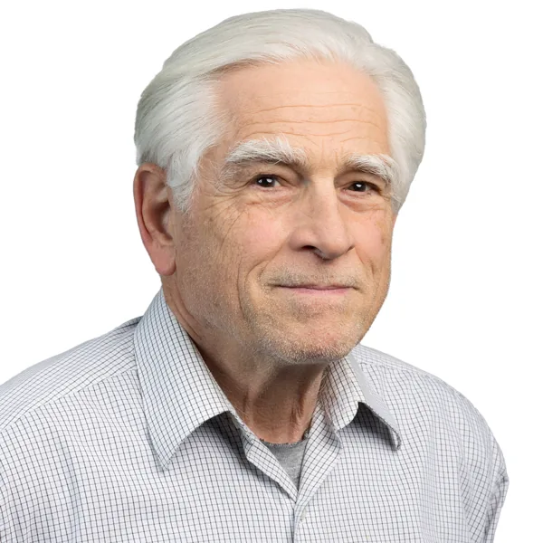
Paul SchorrAdjunct InstructorAbdullah ShabarekAdjunct InstructorBrian ShielsAdjunct Instructor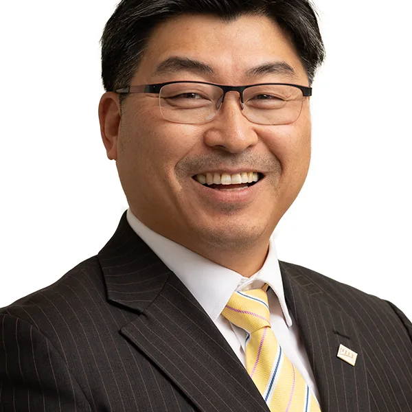
Simon ShimAdjunct InstructorAlan SlaughterAdjunct InstructorRima TaherSenior University LecturerBuilding design for natural hazardsdesigning for high winds and hurricanesBabu VeeregowdaAdjunctGiri VenkiteelaAdjunct InstructorWei WangAdjunct Instructor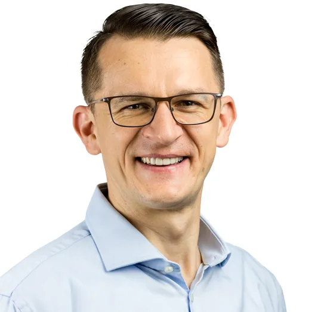
Piotr WiszowatyAdjunct InstructorKevin WynnAdjunctWilliam ZimmermannAdjunct Instructor1Wen ZhangProfessor18,179citations73h-index2Michel BoufadelDistinguished Professor10,966citations61h-index3Jay MeegodaDistinguished Professor10,295citations44h-index4I Jy ChienProfessor6,974citations41h-index5Taha MarhabaDistinguished Professor4,929citations33h-index6Arjun VenkatesanAssociate Professor4,194citations33h-index7Joyoung LeeAssociate Professor3,483citations26h-index8Rayan Hassane AssaadAssistant Professor3,107citations30h-index9Yun BaiAssistant Professor1,848citations20h-index10Oladoyin KolawoleAssistant Professor1,769citations25h-index11Janice DanielProfessor, Civil and Environmental Engineering and Associate Dean for Research and Graduate Studies1,343citations17h-index12Matthew BandeltAssociate Professor1,167citations16h-index13Matthew AdamsAssociate Professor1,002citations16h-index14Patrick Borges RodriguesAssistant Professor613citations6h-index15Branislav DimitrijevicAssociate Professor496citations12h-index16Mohammad KhalidAssistant Professor270citations7h-index17Fadi KaraaAssociate Professor263citations8h-index18Dejan BesenskiAdjunct160citations9h-index19William PennockAssistant Professor150citations5h-index—Nazhat AboobakerAdjunct—citations—h-index—Asif ArshidAdjunct—citations—h-index—Joseph BaladiAdjunct Instructor—citations—h-index—Eduardo CastroSenior University Lecturer—citations—h-index—Andrew CianciaSenior University Lecturer—citations—h-index—Maria ColerAdjunct Instructor—citations—h-index—Yuan DingAssociate Professor—citations—h-index—Muhammad ElgammalAdjunct Instructor—citations—h-index—Michael FurreyAdjunct Instructor—citations—h-index—Frank GolonProfessor of Practice in Construction Engineering and Management—citations—h-index—Christopher HannaAdjunct Instructor—citations—h-index—Walter KononProfessor—citations—h-index—Marwa KorayemAdjunct Instructor—citations—h-index—Allison LapatkaAdjunct Instructor—citations—h-index—Anthony MassariAdjunct Instructor—citations—h-index—Geraldine MilanoSenior University Lecturer—citations—h-index—Rajendra NavalurkarAdjunct Instructor—citations—h-index—Nicole Del MonacoAdjunct Instructor—citations—h-index—Thomas OlenikAssociate Professor—citations—h-index—Godson OraeduAdjunct Instructor—citations—h-index—Avinash PrasadAdjunct Instructor—citations—h-index—Matthew RiegelAdjunct Instructor—citations—h-index—Chrissa RoessnerAdjunct Instructor—citations—h-index—Mohamad SaadeghvaziriProfessor—citations—h-index—Sunil SaigalDistinguished Professor—citations—h-index—Stephanie SantosSenior University Lecturer—citations—h-index—Paul SchorrAdjunct Instructor—citations—h-index—Abdullah ShabarekAdjunct Instructor—citations—h-index—Brian ShielsAdjunct Instructor—citations—h-index—Simon ShimAdjunct Instructor—citations—h-index—Alan SlaughterAdjunct Instructor—citations—h-index—Lazar SpasovicProfessor—citations—h-index—Rima TaherSenior University Lecturer—citations—h-index—Esmeralda VatajDirector of First-Year Physics—citations—h-index—Babu VeeregowdaAdjunct—citations—h-index—Giri VenkiteelaAdjunct Instructor—citations—h-index—Wei WangAdjunct Instructor—citations—h-index—Methi WecharatanaProfessor—citations—h-index—Piotr WiszowatyAdjunct Instructor—citations—h-index—Kevin WynnAdjunct—citations—h-index—William ZimmermannAdjunct Instructor—citations—h-index
Wen ZhangProfessor18,179citations73h-index2Michel BoufadelDistinguished Professor10,966citations61h-index3Jay MeegodaDistinguished Professor10,295citations44h-index4I Jy ChienProfessor6,974citations41h-index5Taha MarhabaDistinguished Professor4,929citations33h-index6Arjun VenkatesanAssociate Professor4,194citations33h-index7Joyoung LeeAssociate Professor3,483citations26h-index8Rayan Hassane AssaadAssistant Professor3,107citations30h-index9Yun BaiAssistant Professor1,848citations20h-index10Oladoyin KolawoleAssistant Professor1,769citations25h-index11Janice DanielProfessor, Civil and Environmental Engineering and Associate Dean for Research and Graduate Studies1,343citations17h-index12Matthew BandeltAssociate Professor1,167citations16h-index13Matthew AdamsAssociate Professor1,002citations16h-index14Patrick Borges RodriguesAssistant Professor613citations6h-index15Branislav DimitrijevicAssociate Professor496citations12h-index16Mohammad KhalidAssistant Professor270citations7h-index17Fadi KaraaAssociate Professor263citations8h-index18Dejan BesenskiAdjunct160citations9h-index19William PennockAssistant Professor150citations5h-index—Nazhat AboobakerAdjunct—citations—h-index—Asif ArshidAdjunct—citations—h-index—Joseph BaladiAdjunct Instructor—citations—h-index—Eduardo CastroSenior University Lecturer—citations—h-index—Andrew CianciaSenior University Lecturer—citations—h-index—Maria ColerAdjunct Instructor—citations—h-index—Yuan DingAssociate Professor—citations—h-index—Muhammad ElgammalAdjunct Instructor—citations—h-index—Michael FurreyAdjunct Instructor—citations—h-index—Frank GolonProfessor of Practice in Construction Engineering and Management—citations—h-index—Christopher HannaAdjunct Instructor—citations—h-index—Walter KononProfessor—citations—h-index—Marwa KorayemAdjunct Instructor—citations—h-index—Allison LapatkaAdjunct Instructor—citations—h-index—Anthony MassariAdjunct Instructor—citations—h-index—Geraldine MilanoSenior University Lecturer—citations—h-index—Rajendra NavalurkarAdjunct Instructor—citations—h-index—Nicole Del MonacoAdjunct Instructor—citations—h-index—Thomas OlenikAssociate Professor—citations—h-index—Godson OraeduAdjunct Instructor—citations—h-index—Avinash PrasadAdjunct Instructor—citations—h-index—Matthew RiegelAdjunct Instructor—citations—h-index—Chrissa RoessnerAdjunct Instructor—citations—h-index—Mohamad SaadeghvaziriProfessor—citations—h-index—Sunil SaigalDistinguished Professor—citations—h-index—Stephanie SantosSenior University Lecturer—citations—h-index—Paul SchorrAdjunct Instructor—citations—h-index—Abdullah ShabarekAdjunct Instructor—citations—h-index—Brian ShielsAdjunct Instructor—citations—h-index—Simon ShimAdjunct Instructor—citations—h-index—Alan SlaughterAdjunct Instructor—citations—h-index—Lazar SpasovicProfessor—citations—h-index—Rima TaherSenior University Lecturer—citations—h-index—Esmeralda VatajDirector of First-Year Physics—citations—h-index—Babu VeeregowdaAdjunct—citations—h-index—Giri VenkiteelaAdjunct Instructor—citations—h-index—Wei WangAdjunct Instructor—citations—h-index—Methi WecharatanaProfessor—citations—h-index—Piotr WiszowatyAdjunct Instructor—citations—h-index—Kevin WynnAdjunct—citations—h-index—William ZimmermannAdjunct Instructor—citations—h-indexNazhat AboobakerAdjunctMatthew AdamsAssociate Professoradvanced cement based materialscorrosionconcrete durabilitysustainable construction materialsAsif ArshidAdjunctYun BaiAssistant ProfessorTransportation Asset ManagementTransportation Systems ModelingSmart MobilityLogisticsJoseph BaladiAdjunct InstructorMatthew BandeltAssociate ProfessorInfrastructure MaterialsStructural EngineeringComputational ModelingHPFRCCDejan BesenskiAdjunctMichel BoufadelDistinguished ProfessorEnvironmentalenergyOil SpillsCoastal Systems.Eduardo CastroSenior University LecturerAndrew CianciaSenior University LecturerMaria ColerAdjunct InstructorJanice DanielProfessor, Civil and Environmental Engineering and Associate Dean for Research and Graduate Studiestransportation operationssafetyBranislav DimitrijevicAssociate ProfessorPerformance-Based Transportation Planning and ProgrammingIntegrated Travel Demand and Land Use PlanningDecision Support Systems for Traffic Operations, Incident and Congestion ManagementYuan DingAssociate ProfessorMuhammad ElgammalAdjunct InstructorMichael FurreyAdjunct InstructorFrank GolonProfessor of Practice in Construction Engineering and ManagementChristopher HannaAdjunct InstructorI Jy ChienProfessorMathematical and simulation modelingPublic transportation systemsTransportation systems analysisIntelligent transportation systemsFadi KaraaAssociate Professorwith a focus on waterwastewater and energy supply chainsInfrastructure managementconstruction managementMohammad KhalidAssistant ProfessorEnd-User DevelopmentData AnalyticsSensing TechnologiesConstruction InformaticsOladoyin KolawoleAssistant ProfessorGeomechanicsPorous MediaGeotechnical EngineeringBiogeomechanicsWalter KononProfessorMarwa KorayemAdjunct InstructorAllison LapatkaAdjunct InstructorJoyoung LeeAssociate ProfessorConnected and Automated VehiclesIntersection Control and Traffic OperationsIntelligent transportation systemsVehicular Wireless CommunicationsTaha MarhabaDistinguished ProfessorAnthony MassariAdjunct InstructorJay MeegodaDistinguished ProfessorMechanics of Geo-environmental EngineeringGeraldine MilanoSenior University LecturerRajendra NavalurkarAdjunct InstructorNicole Del MonacoAdjunct InstructorThomas OlenikAssociate ProfessorStormwater Managementhydraulicsexpert witnessGodson OraeduAdjunct InstructorPatrick Borges RodriguesAssistant ProfessorHuman-Robot Interaction (HRI)Building Information Modeling (BIM)William PennockAssistant ProfessorModeling of conventional drinking water treatment processes (coagulation, flocculation, sedimentation, filtration)Technology development for low resource applicationsfluid mechanicsLead corrosionAvinash PrasadAdjunct InstructorRayan Hassane AssaadAssistant ProfessorInfrastructure and Construction ManagementAI and Data AnalyticsSensing & RoboticsautomationMatthew RiegelAdjunct InstructorChrissa RoessnerAdjunct InstructorMohamad SaadeghvaziriProfessorSunil SaigalDistinguished ProfessorStephanie SantosSenior University LecturerPaul SchorrAdjunct InstructorAbdullah ShabarekAdjunct InstructorBrian ShielsAdjunct InstructorSimon ShimAdjunct InstructorAlan SlaughterAdjunct InstructorLazar SpasovicProfessorfreight transportationbusiness logisticsTransportation systems analysisRima TaherSenior University LecturerBuilding design for natural hazardsdesigning for high winds and hurricanesEsmeralda VatajDirector of First-Year PhysicsBabu VeeregowdaAdjunctArjun VenkatesanAssociate ProfessorThe Emerging Contaminants Research Laboratory (ECRL) is interested in studying the occurrencefatetreatment of emerging contaminants in the natural and built environmentContaminants of Emerging ConcernGiri VenkiteelaAdjunct InstructorWei WangAdjunct InstructorMethi WecharatanaProfessorPiotr WiszowatyAdjunct InstructorKevin WynnAdjunctWen ZhangProfessorEnvironmental NanotechnologyRenewable energyphotocatalysisreactive membrane filtrationWilliam ZimmermannAdjunct Instructor
Michel BoufadelDistinguished ProfessorEnvironmentalenergyOil SpillsCoastal Systems.Eduardo CastroSenior University LecturerAndrew CianciaSenior University LecturerMaria ColerAdjunct InstructorJanice DanielProfessor, Civil and Environmental Engineering and Associate Dean for Research and Graduate Studiestransportation operationssafetyBranislav DimitrijevicAssociate ProfessorPerformance-Based Transportation Planning and ProgrammingIntegrated Travel Demand and Land Use PlanningDecision Support Systems for Traffic Operations, Incident and Congestion ManagementYuan DingAssociate ProfessorMuhammad ElgammalAdjunct InstructorMichael FurreyAdjunct InstructorFrank GolonProfessor of Practice in Construction Engineering and ManagementChristopher HannaAdjunct InstructorI Jy ChienProfessorMathematical and simulation modelingPublic transportation systemsTransportation systems analysisIntelligent transportation systemsFadi KaraaAssociate Professorwith a focus on waterwastewater and energy supply chainsInfrastructure managementconstruction managementMohammad KhalidAssistant ProfessorEnd-User DevelopmentData AnalyticsSensing TechnologiesConstruction InformaticsOladoyin KolawoleAssistant ProfessorGeomechanicsPorous MediaGeotechnical EngineeringBiogeomechanicsWalter KononProfessorMarwa KorayemAdjunct InstructorAllison LapatkaAdjunct InstructorJoyoung LeeAssociate ProfessorConnected and Automated VehiclesIntersection Control and Traffic OperationsIntelligent transportation systemsVehicular Wireless CommunicationsTaha MarhabaDistinguished ProfessorAnthony MassariAdjunct InstructorJay MeegodaDistinguished ProfessorMechanics of Geo-environmental EngineeringGeraldine MilanoSenior University LecturerRajendra NavalurkarAdjunct InstructorNicole Del MonacoAdjunct InstructorThomas OlenikAssociate ProfessorStormwater Managementhydraulicsexpert witnessGodson OraeduAdjunct InstructorPatrick Borges RodriguesAssistant ProfessorHuman-Robot Interaction (HRI)Building Information Modeling (BIM)William PennockAssistant ProfessorModeling of conventional drinking water treatment processes (coagulation, flocculation, sedimentation, filtration)Technology development for low resource applicationsfluid mechanicsLead corrosionAvinash PrasadAdjunct InstructorRayan Hassane AssaadAssistant ProfessorInfrastructure and Construction ManagementAI and Data AnalyticsSensing & RoboticsautomationMatthew RiegelAdjunct InstructorChrissa RoessnerAdjunct InstructorMohamad SaadeghvaziriProfessorSunil SaigalDistinguished ProfessorStephanie SantosSenior University LecturerPaul SchorrAdjunct InstructorAbdullah ShabarekAdjunct InstructorBrian ShielsAdjunct InstructorSimon ShimAdjunct InstructorAlan SlaughterAdjunct InstructorLazar SpasovicProfessorfreight transportationbusiness logisticsTransportation systems analysisRima TaherSenior University LecturerBuilding design for natural hazardsdesigning for high winds and hurricanesEsmeralda VatajDirector of First-Year PhysicsBabu VeeregowdaAdjunctArjun VenkatesanAssociate ProfessorThe Emerging Contaminants Research Laboratory (ECRL) is interested in studying the occurrencefatetreatment of emerging contaminants in the natural and built environmentContaminants of Emerging ConcernGiri VenkiteelaAdjunct InstructorWei WangAdjunct InstructorMethi WecharatanaProfessorPiotr WiszowatyAdjunct InstructorKevin WynnAdjunctWen ZhangProfessorEnvironmental NanotechnologyRenewable energyphotocatalysisreactive membrane filtrationWilliam ZimmermannAdjunct InstructorFaculty whose annual citations grew over their five most recent complete years (the current year is excluded — it is still accruing). Citations lag research by 2–5 years, and faculty with large established citation bases naturally show flatter recent growth — this highlights recent momentum, not overall impact or research quality.
Dejan BesenskiAdjunct2021–2025+90%/yrmomentum40recent/yrMohammad KhalidAssistant Professor2021–2025+62%/yrmomentum72recent/yrRayan Hassane AssaadAssistant Professor2021–2025+48%/yrmomentum876recent/yrOladoyin KolawoleAssistant Professor2021–2025+39%/yrmomentum385recent/yrMatthew AdamsAssociate Professor2021–2025+23%/yrmomentum216recent/yrFadi KaraaAssociate Professor▲ growingmomentum15recent/yrMatthew BandeltAssociate Professor2021–2025+20%/yrmomentum221recent/yrJay MeegodaDistinguished Professor2021–2025+19%/yrmomentum1503recent/yrArjun VenkatesanAssociate Professor2021–2025+18%/yrmomentum666recent/yrWen ZhangProfessor2021–2025+12%/yrmomentum2809recent/yrYun BaiAssistant Professor2021–2025+10%/yrmomentum293recent/yrTaha MarhabaDistinguished Professor2021–2025+6%/yrmomentum449recent/yrCitation counts support, they don’t replace, judgment.
Professors
Michel BoufadelDistinguished ProfessorEnvironmentalenergyOil SpillsCoastal Systems.Jay MeegodaDistinguished ProfessorMechanics of Geo-environmental EngineeringSunil SaigalDistinguished ProfessorJanice DanielProfessor, Civil and Environmental Engineering and Associate Dean for Research and Graduate Studiestransportation operationssafetyFrank GolonProfessor of Practice in Construction Engineering and ManagementI Jy ChienProfessorMathematical and simulation modelingPublic transportation systemsTransportation systems analysisIntelligent transportation systemsWalter KononProfessorMohamad SaadeghvaziriProfessorLazar SpasovicProfessorfreight transportationbusiness logisticsTransportation systems analysisEsmeralda VatajDirector of First-Year PhysicsMethi WecharatanaProfessorWen ZhangProfessorEnvironmental NanotechnologyRenewable energyphotocatalysisreactive membrane filtrationAssociate Professors
Matthew AdamsAssociate Professoradvanced cement based materialscorrosionconcrete durabilitysustainable construction materialsMatthew BandeltAssociate ProfessorInfrastructure MaterialsStructural EngineeringComputational ModelingHPFRCCBranislav DimitrijevicAssociate ProfessorPerformance-Based Transportation Planning and ProgrammingIntegrated Travel Demand and Land Use PlanningDecision Support Systems for Traffic Operations, Incident and Congestion ManagementYuan DingAssociate ProfessorFadi KaraaAssociate Professorwith a focus on waterwastewater and energy supply chainsInfrastructure managementconstruction managementJoyoung LeeAssociate ProfessorConnected and Automated VehiclesIntersection Control and Traffic OperationsIntelligent transportation systemsVehicular Wireless CommunicationsThomas OlenikAssociate ProfessorStormwater Managementhydraulicsexpert witnessArjun VenkatesanAssociate ProfessorThe Emerging Contaminants Research Laboratory (ECRL) is interested in studying the occurrencefatetreatment of emerging contaminants in the natural and built environmentContaminants of Emerging ConcernAssistant Professors
Yun BaiAssistant ProfessorTransportation Asset ManagementTransportation Systems ModelingSmart MobilityLogisticsMohammad KhalidAssistant ProfessorEnd-User DevelopmentData AnalyticsSensing TechnologiesConstruction InformaticsOladoyin KolawoleAssistant ProfessorGeomechanicsPorous MediaGeotechnical EngineeringBiogeomechanicsPatrick Borges RodriguesAssistant ProfessorHuman-Robot Interaction (HRI)Building Information Modeling (BIM)William PennockAssistant ProfessorModeling of conventional drinking water treatment processes (coagulation, flocculation, sedimentation, filtration)Technology development for low resource applicationsfluid mechanicsLead corrosionRayan Hassane AssaadAssistant ProfessorInfrastructure and Construction ManagementAI and Data AnalyticsSensing & RoboticsautomationSenior Lecturers
Nazhat AboobakerAdjunctAsif ArshidAdjunctJoseph BaladiAdjunct InstructorDejan BesenskiAdjunctEduardo CastroSenior University LecturerAndrew CianciaSenior University LecturerMaria ColerAdjunct InstructorMuhammad ElgammalAdjunct InstructorMichael FurreyAdjunct InstructorChristopher HannaAdjunct InstructorMarwa KorayemAdjunct InstructorAllison LapatkaAdjunct InstructorAnthony MassariAdjunct InstructorGeraldine MilanoSenior University LecturerRajendra NavalurkarAdjunct InstructorNicole Del MonacoAdjunct InstructorGodson OraeduAdjunct InstructorAvinash PrasadAdjunct InstructorMatthew RiegelAdjunct InstructorChrissa RoessnerAdjunct InstructorStephanie SantosSenior University LecturerPaul SchorrAdjunct InstructorAbdullah ShabarekAdjunct InstructorBrian ShielsAdjunct InstructorSimon ShimAdjunct InstructorAlan SlaughterAdjunct InstructorRima TaherSenior University LecturerBuilding design for natural hazardsdesigning for high winds and hurricanesBabu VeeregowdaAdjunctGiri VenkiteelaAdjunct InstructorWei WangAdjunct InstructorPiotr WiszowatyAdjunct InstructorKevin WynnAdjunctWilliam ZimmermannAdjunct InstructorNo faculty match “”.